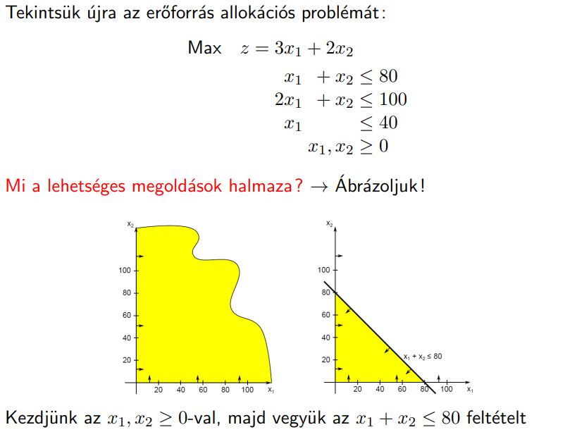
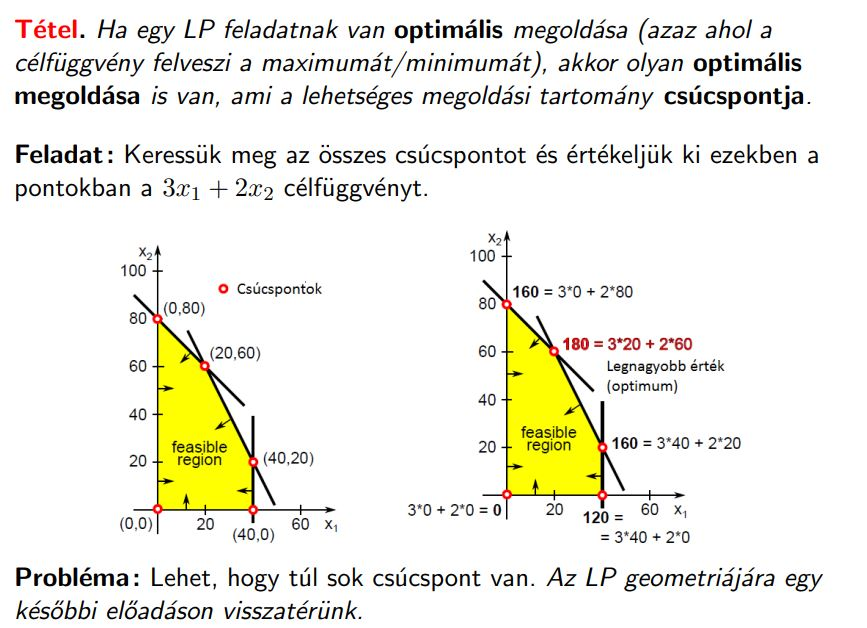
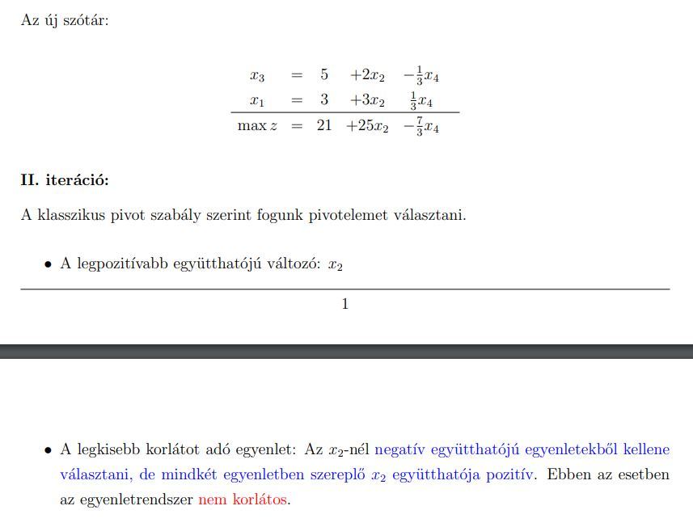

LP alapfeladat: Keressük adott lineáris célfüggvény, értelmezési tartományú függvény szélsőértékét, értelmezési tartományának adott lineáris korlátokkal meghatározott részében.
Lehetséges megoldás: olyan vektor, hogy -t behelyettesítve -be kielégíti a feladat feltételrendszerét.
Lehetséges megoldási tartomány: az összes lehetséges megoldás (vektor) halmaza.
Optimális megoldás: egy olyan lehetséges megoldás, ahol a célfüggvény felveszi a maximumát/minimumát.
Válasszuk meg a döntési változókat ()
Határozzuk meg a célt és a célfüggvényt (max/min pl: max )
Írjuk fel a korlátozó feltételeket(lineáris egyenlötlenségek pl: )
Határozzuk meg a változók értelmezési tartományát (előjel feltételek )
Példa:
Egy cég Tardisokat és Dalekeket akar árulni. A Tardis darabja 25 euró míg a Dalek darabja 20 euró protifot jövedelmez.
A következő két héten a termék összerakására 200 munkaóra áll rendelkezésre. Tardis és a Dalek is 5óra/db.
A Dalekhez szükség van egy speciális lézerhabverőre, amiből csak 24 darab van raktáron.
A cég raktározási helye 320 négyzetméter, amiből a Tardis 10 négyzetmétert a Dalek 5 négyzetmétert foglal el.
A cég maximalizálni szeretne
az összeszerelendő Tardisok száma, az összeszerelendő Dalekek száma.
Célfüggvény felírása
Tudjuk, hogy maximalizálni akar a cég, és tudjuk mennyi 1 darab Tardis és Dalek profitja.
Tehát
Összeszerelés időigénye: Mivel mindkettő összeszerelése 5 óra és csak 200 óra áll rendelkezésre ezért:
A dalek lézerhabverője is fontos, amiből 24 darab van
Raktározási feltétel is fontos, Tardis: 10m^2 Dalek: 5m^2 és csak 320m^2 áll rendelkezésre.
Tehát:
max
A lineáris programozás szoros kapcsolatban áll a konvex geometriával: Fogalmak, mint a bázismegoldás, lineáris feltétel, lehetséges megoldások halmaza, stb… mind megfeleltethető egy-egy geometria objektummal.
: -dimenziós lineáris tér a valós számok felett – elemei az elemű valós vektorok.
: -dimenziós euklideszi tér: lineáris tér amin értelmezett egy belső szorzat és egy távolság függvény:
Belső szorzat: , ezáltal vektornorma:
Távolság: , vagyis a koordinátakülönbség-négyzetek összegeinek a gyöke.
Így a lehetséges megoldások megadhatóak pontokként (n-dimenziós vektor) az térben.
és közti szakasz: {}, ahol .
Világos hogy ha , akkor egy felezőpontot definiálunk.
Csúcspont: olyan pont, amely nem áll elő egyetlen ponthalmazbeli szakaz felezőpontjaként sem.
A lineáris feltételek síkokat, és zárt féltereket definiálnak az euklideszi térben hiszen:
n-dimenziós sík: {}, ahol rögzített számok.
n-dimenziós zárt féltér: {}, ahol rögzített számok.
Ezáltal, a lehetséges megoldások halmaza tulajdonképpen a feltételek által definiált zárt félterek, és síkok metszete, ami egy konvex poliéder: zárt, véges sok csúcsponttal rendelkező, konvex ponthalmaz.
Példa:
Két változó esetén ábrázolhatjuk pl. a lehetséges megoldások halmazát koordináta rendszerben.
Minden feltétel egy egyenest határoz meg, ezeket berajzoljuk.
Ezzel valamilyen sokszöget kapunk meg, ennek a sokszögnek a csúcsainak a koordinátái lesznek a lehetséges megoldások.
 Ahhoz, hogy lecseréljük az egyenlőtlenségeket egyenlőségekre az LP alapfeladatban, adjunk hozzá minden egyenlőtlenség bal oldalához egy mesterséges változót.
Ezután fejezzük ki a mesterséges változókat az egyenlet átrendezésével.
A kapott egyenletrendszert hívjuk szótár alak nak.
Terminológia
Természetes (vagy döntési) változók: Standard alakú feladatban szereplő változók ()
Mesterséges változók: A szótár felírásakor felvett új nemnegatív változók ()
Bázisváltozók: A szótár feltétel egyenleteinek a bal oldalán álló változók
Nembázis változók: A szótár jobb oldalán álló változók.
Szótár bázismegoldása: Olyan vektor, amelyben a nembázis változók értéke 0, ezért a bázisváltozók értékei az öket tartalmazó egyenletek jobb oldali konstansai.
Lehetséges megoldás: Olyan bázismegoldás, ami egyben lehetséges megoldás is, azaz a szótárra teljesül, hogy
A szimplex algoritmus:
iteratív optimum keresés
ismételt áttérés más szótárakra, a következő feltételek betartása mellett:
minden iteráció szótára ekvivalens az őt megelőzőével
minden iteráció bázismegoldásán a célfüggvény értéke nagyobb vagy egyenlő, mint az előző iterációban
minden iteráció bázismegoldása lehetséges megoldás
Szimplex algoritmus menete:
Igen: Az aktuális bázismegoldás optimális
Nem: Folytatás 2. ponttal
Válasszuk a nembázis változók közül belépőváltozónak valamely -t amelyre (Pozitív célfüggvény együttható)
minden -re?
Igen: Az LP feladat nem korlátos
Nem: folyatás 4. ponttal
Legyen valamely index, amelyre minimális és
Hajtsunk végre egy pivot lépést úgy, hogy legyen a belépőváltozó és az feltétel bázisváltozója legyen a kilépő. Folyataás 1. ponttal
Pivot lépés: új szótár megadása egy bázis és nembázis változó szerepének felcserélésével
Belépőváltozó: az a nembázis változó, ami a következő szótárra áttéréskor bázisváltozóvá válik
Kilépő változó: az a bázisváltozó, ami a köv. szótárra áttéréskor nembázissá válik
Szótárak ekvivalenciája: két szótár ekvivalens, ha az általuk leírt egyenletrendszer összes lehetséges megoldása és a hozzájuk tartozó célfüggvényértekek rendre megegyeznek
Pivot lépés előtti és utáni szótárak ekvivalensek.
A szimplex algoritmus csak egy keretalgoritmus: nem teszi egyértelművé, hogy a 2. és a 4. pontban melyik változókat válasszuk, amennyiben többet is lehetne.
Pivot szabály / Generálóelem választási szabály: Olyan szabály, ami egyértelművé teszi, hogy a szimplex algoritmusban mely változók legyenek a belépő- és a kilépőváltozók, ha több változó is teljesíti az alapfeltételeket.
Klasszikus szimplex algoritmus pivot szabály: (Nem biztosan áll meg)
A lehetséges belépőváltozók közül válasszuk a legnagyobb értékűt. Több ilyen esetén a legkisebb indexűt.
A lehetséges kilépőváltozók közül válasszuk a legkisebb indexű egyenlet változóját, amelyre minimális és .
Bland szabály (Biztosan megáll)
Oszlop: a lehetséges belépőváltozók közül válasszuk a legkisebb indexűt
Sor: A lehetséges változók közül válasszuk a legkisebb korlátot adó egyenlet (konstansokat kell nézni), ha egyenlő akkor a legkisebb indexű.
Legnagyobb növekmény (Nem biztosan áll meg)
Lexikografikus szabály (Biztosan megáll)
kiegészítjük epszilonokkal mesterségesen a szótárat
a lehetséges belépőváltozók közül a legnagyobb értékűt válasszuk, több ilyennél a legkisebb indexűt
a lehetséges kilépőváltozók közül azt, amelynek l indexű egyenletére az együtthatókból álló vektor lexikografikusan a legkisebb
Véletlen pivot
Ha van negatív konstans, akkor alkalmazható a kétfázisú szimplex módszer.
Vegyünk egy segédfeladatot
bevezetünk egy új, x0 mesterséges segédváltozót
legyen w az új célfüggvény:
térjünk át szótár alakra
vegyük a legnegatívabb jobboldalú egyenletet, és ebből fejezzük ki -t
a többiből a mesterséges változókat
ezután már egy lehetséges indulószótárat kapunk
A standard feladatnak csak akkor létezik lehetséges megoldása, ha a hozzá felírt segédfeladat optimuma.
Ha a segédfeladatot megoldjuk a szimplexszel, és annak optimuma 0, akkor a megoldás utolsó szótárából könynen felírhatunk egy olyan szótárat, amely az eredeti feladat szótára, és bázismegoldása lehetséges megoldás is egyben.
A szótár felírásának lépései:
az feltételt elhagyjuk
ha bázisváltozó, akkor az egyenletének jobb oldalán lévő nem 0 együtthatójú változók egyikével végrehajtunk egy pivot lépést
elhagyjuk x0 megmaradt erőforrásait*
a célfüggvény egyenletét lecseréljük az eredeti célfüggvényre, amit átírunk az aktuális bázisváltozóknak megfelelően
A következő fázisban pedig az átírt szótáron futtatjuk a szimplex algoritmust
Degenerált iterációs lépés: olyan szimplex iteráció, amelyben nem változik a bázismegoldás
Degenerált bázismegoldás: olyan bázismegoldás, amelyben egy vagy több bázisváltozó értéke is 0
Ciklizáció: ha a szimplex algoritmus valamely iterációja után egy korábbi szótárat visszakapunk, akkor az a ciklizáció
Ha a szimplex algoritmus nem áll meg, akkor ciklizál!
A ciklizáció elkerülhető megfelelő pivot szabály alkalmazásával (lexikografikus, Bland szabály)
A ciklizáció oka a degeneráció, azaz a bázisváltozók 0-vá válása a bázismegoldásban
Ha az LP feladat maximalizálandó/minimalizálandó, és a célfüggvénye tetszőlegesen nagy/kicsi értéket felvehet, akkor nem korlátos a feladat.
Más szóval, ha tudunk oszlopot választani, de mikor sort választanánk minden együttható pozitív nem korlátos.
Ha a standard alakú LP feladatot kétfázisú szimplex módszerrel oldjuk meg, az első fázis eldönti, hogy van-e lehetséges megoldás.
Ha a felírt segédfeladatban az optimum értéke kisebb, mint nulla, akkor nincs lehetséges megoldás, ha 0, akkor van.